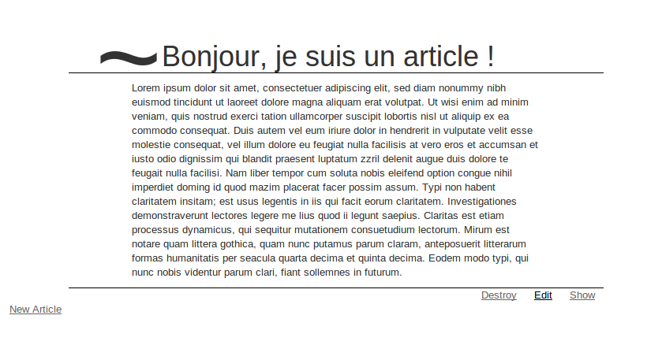
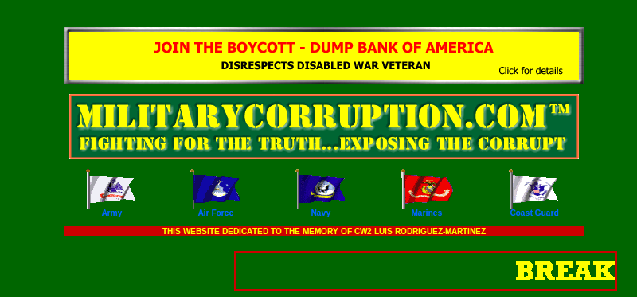

Rails Tutal
(ou comment avoir la Flemme)

Slides disponibles ici : http://delmaire.iiens.net/rails
De Loïc Delmaire alias Skelz0r
@loicdelmaire / loic@blackbird.co
Objectifs (1/2)
- Une culture générale sur les frameworks web
- Des bonnes pratiques de développement
- Pondre des sites webs efficacement et rapidement

Objectifs (2/2)
A la fin du cours, vous aurez codé un blog avec gestion d'articles

Oui oui, il ressemblera à ça :)
Plan du tutal
- Rails, What ze fuck is dat shit? ô_Ô
- Un peu de théorie /o\
- La première feature \o/
- Deep inside ... o (<= ceci est un trou )
- Un peu de pratique :]
I. Rails, What ze fuck is dat shit?
- Petit historique du web ..
- ... et Rails dans tout ça ?
Petit historique du web
Le début du web: World Wide Web (1990)

Petit historique du web
Premières pages dynamiques (1994)
Java
 Javascript
Javascript
 PHP
PHP
Et Rails dans tout ça ?
- Crée en 2004, par @dhh (37signals), extrait de Basecamp
- Framework MVC ..
- .. écrit en Ruby ..
- .. très haut niveau!
La philosophie de Rails
- Don't Repeat Yourself
- Conventions over Configurations
Un peu de théorie
- Posons des conventions : l'architecture REST
- Et concrétement, ¿ que pasa ? Le MVC et le routage
Il s'agit de contraintes appliquées au protocole HTTP (2000, Roy Fielding)
- Exemple 1 : On accède au listing des articles à l'adresse /articles
- Exemple 2 : Un article est toujours défini par un titre et un texte.
- Exemple 3 : le client et le serveur sont séparés.
Concrètement, qu'est-ce qui se passe ?
- Le client entre une adresse web dans son navigateur
- Le serveur WEB (apache ou autre) récupère la requête ..
- .. pour la rediriger dans le routeur de l'application.
Le MVC dans Rails
- Le routeur redirige sur le bon contrôleur.
- Le contrôleur va chercher dans le modèle les données.
- Le modèle "parle" à la base de donnée ..
- .. et renvoi les données formatées au contrôleur.
Le MVC dans Rails
- Le contrôleur appelle la bonne vue
- Après quelques traitements, la vue est rendue au webserveur ..
- Qui va nous rendre la bonne page !
La première feature
- Les commandes de bases
- Anatomie de l'application
- Scaffoldons mes amis!
Les commandes de bases
-
La commande rails, génération et manipulation du site
Exemple :
rails server # Lance le serveur
-
La commande rake, un make-like
Exemple :
rake db:create # Créer la base de données
-
La commande bundle, la commande de gestion des dépendances
Exemple :
bundle install # Installe les dépendances d'un projet
Anatomie de l'application
Le dossier app/
app
├── assets
│ ├── images
│ │ └── rails.png
│ ├── javascripts
│ │ └── application.js
│ └── stylesheets
│ └── application.css
├── controllers
│ └── application_controller.rb
├── helpers
│ └── application_helper.rb
├── mailers
├── models
└── views
└── layouts
└── application.html.erb
10 directories, 6 files
Il s'agit du
plus important !
- assets/ : Dossier des ressources tierces liées à la vue.
- controller/ : Dossier des contrôleurs
- models/ : Dossier des modèles
- views/ : Dossier des vues
- mailers/ : Gestion de l'envoi et réception de mails dans l'application
- helpers/ : Modules de fonctions
Le dossier config/
config
├── application.rb
├── boot.rb
├── database.yml
├── environment.rb
├── environments
│ ├── development.rb
│ ├── production.rb
│ └── test.rb
├── initializers
│ ├── backtrace_silencers.rb
│ ├── inflections.rb
│ ├── mime_types.rb
│ ├── secret_token.rb
│ ├── session_store.rb
│ └── wrap_parameters.rb
├── locales
│ └── en.yml
└── routes.rb
3 directories, 15 files
On trouve ici toutes les
configurations de votre application.
- application.rb et environnement.rb : fichier contenant quelques configurations.
- environnements/ : configurations spécifiques aux environnements.
- database.yml : fichier contenant les infos pour la connexion à la base de données.
- initializers/ : dossiers contenant tous les fichiers customs chargés au démarrage
- routes.rb : fichier listant les différentes routes possibles de votre application.
C'est l'heure du .. SCA-SCA-SCAFOLD!
Tapez la commande suivante:
rails generate scaffold article title body:text
Et voilà ! Vous pouvez maintenant accéder au site voir le résultat !
... wait ... à quelle adresse ? ô_Ô
Le routage
- Il faut définir une route pour accéder à notre ressource!
- Cela se passe dans le fichier config/routes.rb
- La commande pour lister les routes :
rake routes
Le CRUD
.. pour CReate, Update, Delete
| Verbe HTTP |
Adresse |
action |
utilisé pour |
| GET |
/articles |
index |
Listing des articles |
| GET |
/articles/new |
new |
Renvoi un formulaire HTML pour créer un article |
| POST |
/articles |
create |
Créer un article |
| GET |
/articles/:id |
show |
Montre l'article ayant l'id ":id" |
| GET |
/articles/:id/edit |
edit |
Renvoi un formulaire pour éditer l'article ayant l'id ":id" |
| PUT |
/articles/:id |
update |
Modifie l'article ayant l'id ":id" |
| DELETE |
/articles/:id |
destroy |
Supprime l'article ayant l'id ":id" |
Gestion de la base de données :
les migrations en rails
- De base, chaque opération sur le schéma de la base de données s'effectue à l'aide de migrations
-
Tapez la commande suivante :
rake db:migrate
Celle-ci permet d'effectuer toutes les migrations en attentes (se trouvant dans db/migrate/)
-
Retournons maintenant sur http://0.0.0.0:3000/articles
Deep inside ...
- Le contrôleur : comment ça se passe là dedans ?
- Le modèle : la valeur business de votre application
- La vue : le templating ERB
Le contrôleur : comment ça se passe là dedans ?
- Point d'entrée du traitement de la requête
- Récupération des données de la ressource
- Traitement des variables d'environnements
Le modèle : la valeur business de votre application
Tout se passe via un ORM (Object Relation Mapper)
nommée ActiveRecord
ActiveRecord s'occupe de :
- parler à la base de donnée
- valider nos données
- exécuter des processus pendant la durée de vie de la donnée
- le café (presque ..)
La vue : le templating ERB
L'ERB (pour ERuBy) se rapproche de ce que
vous pouvez voir en PHP à l'école
Le templating permet de :
- rendre du HTML (U DON'T SAY) (et autres ..)
- utiliser directement du code ruby au sein de l'application
- manipuler les variables instanciées dans le contrôleur
Hey, hey ! LISTEN!
Je vous avais promis ça à l'origine :
Voici un petit fichier qui va rendre tout ça plus joli (non non c'est pas de la triche :-°) : hackz0r.css.scss
A placer dans le dossier où se trouve les feuilles de style CSS :
app/assets/stylesheets
Un peu de pratique
- Spécifications
- Conception (en milieu Rails)
- Let's do it! (© Dora)
Objectif : Ajouter des commentaires sur les articles
-
Chaque article se voit doté d'un champs pour entrer un commentaire
-
Ces commentaires sont visibles sur la page de l'article
-
Ces commentaires sont affichés du plus récent au plus ancien, de haut en bas.
D'un point de vue MVC
-
D'un point de vue model :
Un commentaire est composé d'un champ de type text
Il existe une relation d'association 1-N entre le modèle Article et Commentaire
-
D'un point de vue contrôleur :
Il faudra créer la méthode create. (créer la create : CONR!)
-
D'un point de vue vue (j'avais pas vu!) :
Il faut créer un formulaire et un listing de commentaires.
Quelques conseils
-
N'hésitez pas à utiliser le scaffold !
-
Allez lire le code généré pour la gestion des formulaires
Protip: app/views/
Merci d'avoir écouté !
Des questions ?


{kind=link}